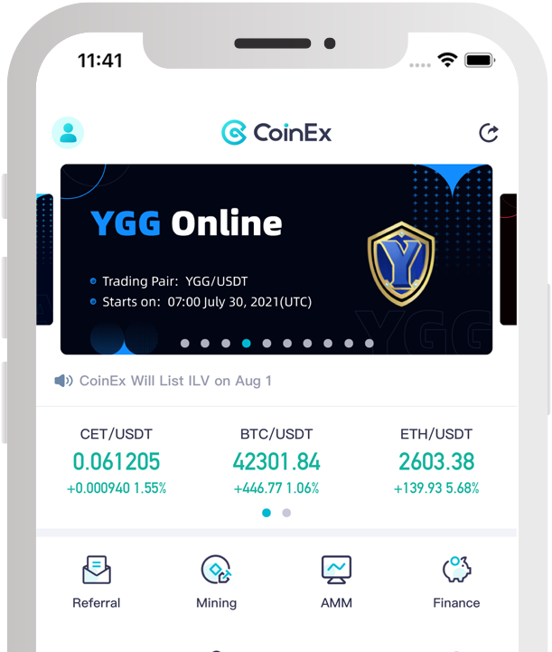
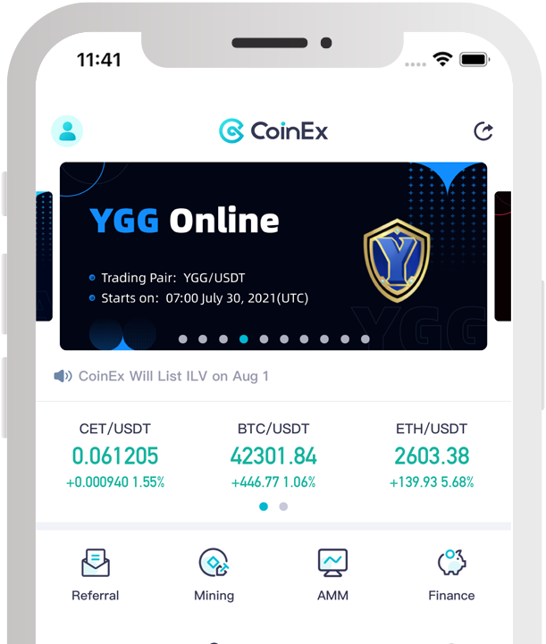

صرافی ارز دیجیتال کوینکس یک بستر در فضای اینترنتی است که این امکان را برای فعالین در بازار ارز دیجیتال فراهم می کند تا بتوانند در جهت مبادله ارز دیجیتال در یک محیط امن با کاربری آسان اقدام کنند. سرمایه گذاران در بازار ارز دیجیتال به راحتی می توانند برای فعالیت در این بازار در سایت coinex.com ثبت نام و شروع به معاملات کنند.
شما از سایت صرافی ارز دیجیتال کوینکس coinex.com چه می دانید؟ وجود یک صرافی مناسب برای داد و ستد ارزهای دیجیتال و تعویض آن ها با پول ملی می تواند به عنوان یک دغدغه ی مهم برای هر سوداگری به شمار برود. وجود تحریم ها در کشور ایران باعث شده است که این موضوع سخت تر از گذشته باشد. این صرافی در سال 2017 کار خود را آغاز کرده است و مقر آن در شهر هنگ کنگ قرار دارد. این صرافی ارزهای دیجیتال به وسیله فردی به نام یانگ هایپو تاسیس شده است و با توجه به قدمت کم آن توانسته است با گردآوری افراد حرفه ای در زمینه ی اینترنتی و امور مالی به کاربران خود خدمات تخصصی را در بازار ارز دیجیتال ارائه کند و همین امر باعث پیشرفت این صرافی شده است. برای آشنایی بیشتر با کوینکس با ما همراه باشید.
کوینکس coinex.com چیست؟
درباره چیستی صرافی ارز دیجیتال کوینکس باید گفت که به عنوان یک بستر اینترنتی است که این امکان را برای کاربران ایجاد می کند تا بتوانند در جهت مبادله ارز دیجیتال در یک محیط امن به سادگی اقدام کنند. کوینکس امکان ارائه ی رمز ارزهای پایه زیادی را دارد.
شما می توانید در این صرافی دیجیتالی ارزهای مختلفی را مبادله کنید که شامل انواع ارز دیجیتال مانند: تتر، اتریوم، بیت کوین و.... می شود. از دیگر ویژگی های کونیکس می توانیم به امکان دسترسی به یک توکن رمز نگاری شده اشاره کرد که زنجیره کوینکس ( CoinEx Chain ) شناخته می شود. انتشار این زنجیره به شکل رسمی در ژوئن 2019 اتفاق افتاده است و خالقان آن مدعی هستند که طراحی آن برای DEX ها صورت گرفته است.
از دیگر اهداف طراحی این زنجیره می توان به ایجاد یک مجموعه ی تجاری اشاره کرد که در عین غیر متمرکز بودن براساس دارایی های کاربر و قوانین و مقررات واضح در امور تجارت شکل گرفته است. از دیگر قابلیت های این سلسله مراتب در کوینکس می توانیم به ایجاد یک Privacy Chain اشاره کرد که امکان ایجاد امنیت برای حریم شخصی کاربران خود را دارد همچنین در کنار زنجیره کوینکس و DEX ها امکان حمایت از پیمان نامه های هوشمند را فراهم آورده است.
در پایان باید بگوییم که زنجیره کونیکس با توجه به مبادلات انجام گرفته به یک شبکه ی عمومی کامل تبدیل خواهد شد که وظیفه ی تامین آن بر عهده ی زنجیره های موازی عمومی است. صرافی ارز دیجیتال کوینکس در بین کاربران خود در سراسر دنیا از جایگاه ویژه ای برخوردار است و قابلیت ارائه طیف وسیعی رمز ارزهای دیجیتالی را دارد. در واقع می توانیم این طور برداشت کنیم که کوینکس به عنوان یک پلتفرم یا بستر سریع برای مبادله ارزهای دیجیتال است که در کنار سرعت بالا و هزینه های پایین امنیت فوق العاده ای داشته و بسیار کاربر پسند است.
آیا کوینکس امن است؟ کوینکس coinex بستری آنلاین برای معامله رمز ارزها با امنیت بسیار بالا، پایدار و کارآمد برای کاربران خود فراهم نموده است، به این معنی که می توانید در کوینکس ثبت نام نموده و با استفاده از حساب کاربری خود و از هرجای دنیا سرمایه گذاری خود را در بازار ارز دیجیتال آغاز کنید.
راهنمای ورود به سایت کوینکس coinex.com
جهت ثبت نام در صرافی ارز دیجیتال کوینکس و ورود به حساب کاربری کوینکس خود می توانند مراحل ذیل را دنبال نمایید.
شاید باور نکنید اما ورود به سایت کوینکس بسیار ساده است. تنها کافی است آدرس coinex.com را وارد کرده و پس از آن آیکون Sign Up را لمس کنید.
در مرحله دوم ورود به coinex باید پس از باز شدن صفحه ی مربوط به ثبت نام آدرس پست الکترونیکی خود را وارد کنید. در این مرحله کاربران بایست کد تایید پست الکترونیکی را دریافت کنند و روی قسمت دریافت کد ضربه بزنند. حال نوبت به انتخاب پسورد می رسد و پس از آن باید موافقت خود را با شرایط اعلام کرده و دکمه ثبت نام را لمس کنید.
در ادامه ورود به سایت coinex فراموش نکنید که پست الکترونیک و حساب شما در صرافی ارز دیجیتال کوینکس به همدیگر اتصال دارند در انتخاب پسورد هوشمندی به خرج داده و یک رمز عبور پیچیده را انتخاب کرده و در محلی نگهداری کنید که دست هیچکس به آن نرسد.
برای ورود به حساب کاربری خود در سایت کوینکس به سایت coinex.com رفته و در بالای صفحه در سمت راست بر روی Sign In کلیک کنید.
پس از باز شدن صفحه مورد نظر آدرس ایمیل یا شماره تلفنی را که با آن ثبت نام کرده اید را درج کنید و پس از نوشتن پسورد در این مرحله کاربران باید در دو گام احراز هویت خود را ثابت کنند. می توانند کد دریافتی را به وسیله Google Authenticator یا اس ام اس تکمیل کرده و با موفقیت به حساب کاربری خود وارد شوند.